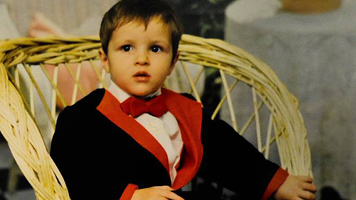
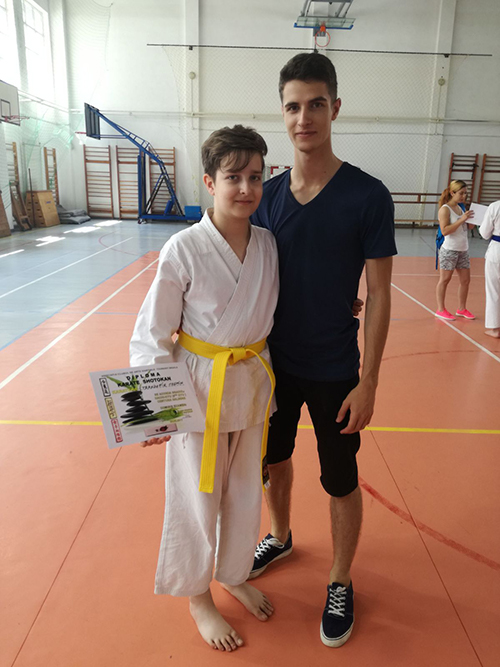
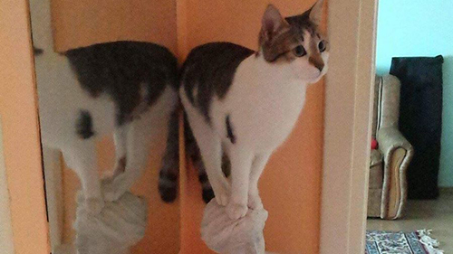
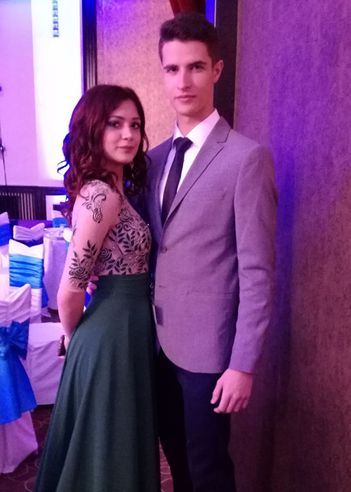
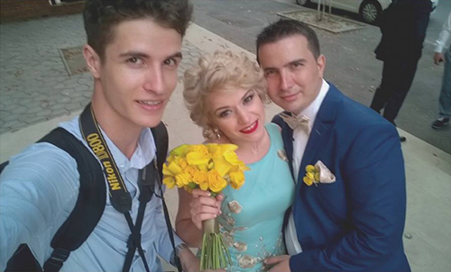
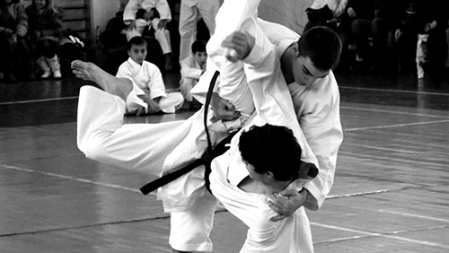
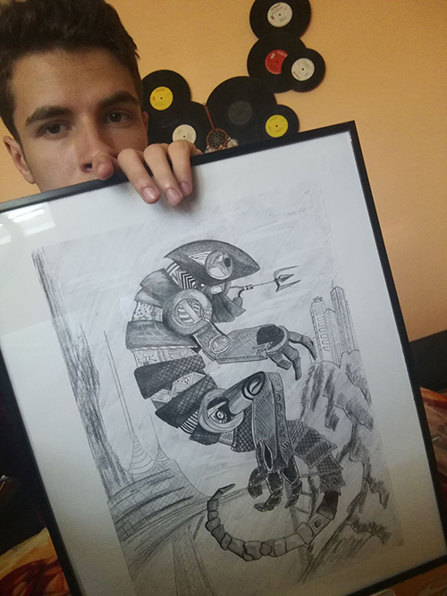
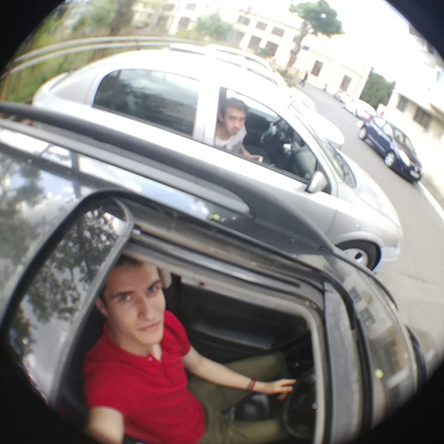
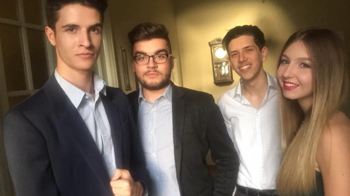
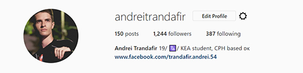

An energic and positive person, I was born in a small town near Danube river, in Braila, Romania. I was raised in a modest and lovely family, a family that offered me all the affection and education I had need to become the person I am today.
I have a brother, named Cosmin, who is a karateka, a gamer and a mathematician. We are pretty opposide one of another, but we get along all the time.
I have a little cat, called Yuki, who is pretty crazy in it's own way, but we love her completely.
Also, I fell in love with this beautiful, intelligent, amazing girl, Alexandra, who is also student at KEA.
Along the way, I picked up a photo camera, and we became very good friends, introducing me to photography. I won competitions, I got well known in my town and I got hired as a wedding photographer. My colleagues taught me a lot of things about photography and videography and they became one of the persons I appreciate the most.
Martial arts were a big part of my life, because I have practiced karate-do shotokan and I had multiple national championship titles. I have obtained the 2 kyu grade, brown belt and I'm very close to the black one.
I have attended a private school during highscool at the graphics class and I have learned different techniques and types of drawing.
Gas, tires, steering wheel a road and a friend to drive with. That's what being a petrolhead means to me.
In my opinion, the key to success is to have good friends along the way to support each other.
You can follow me on Facebook or Instagram anytime.
Andrei I. Trandafir